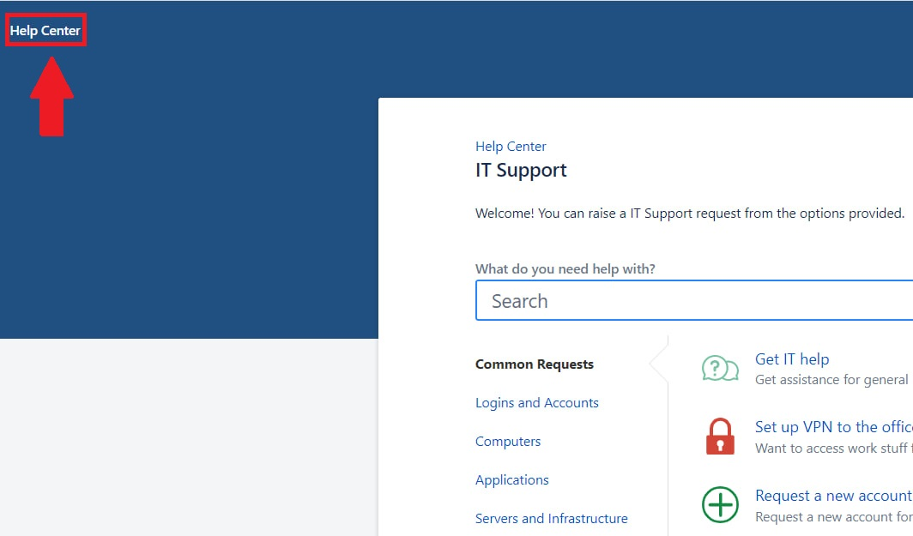
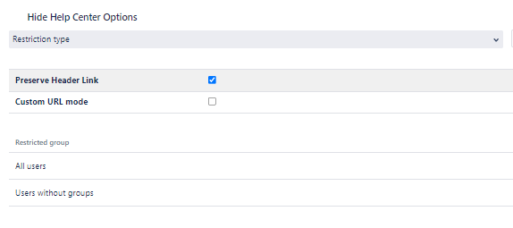
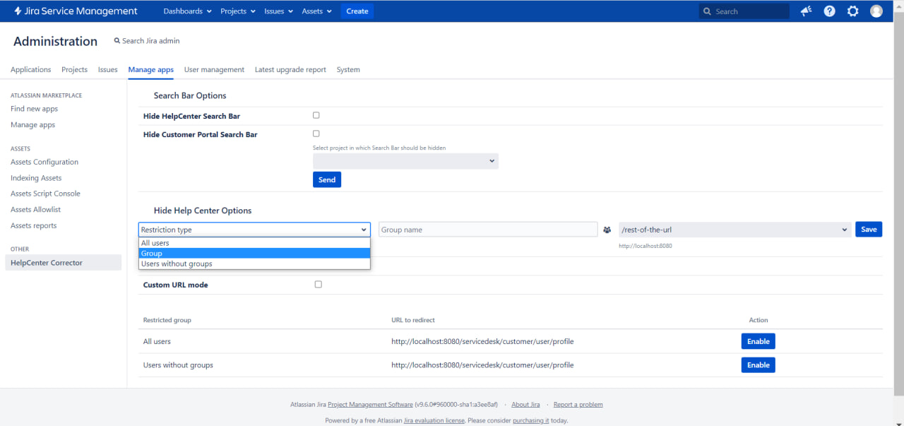
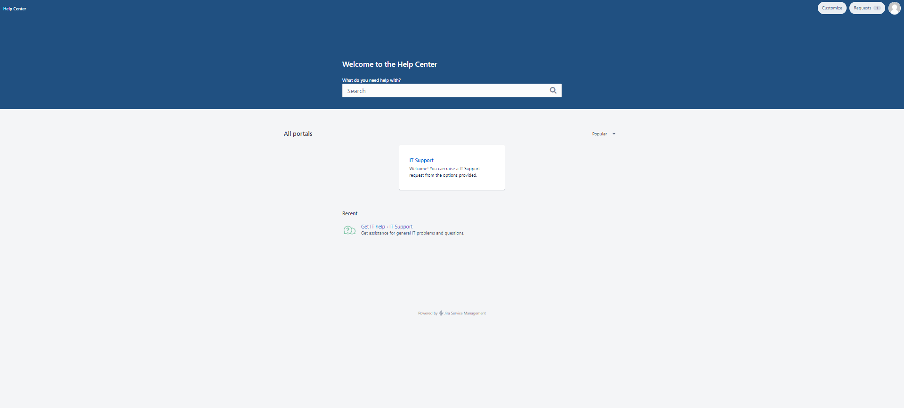
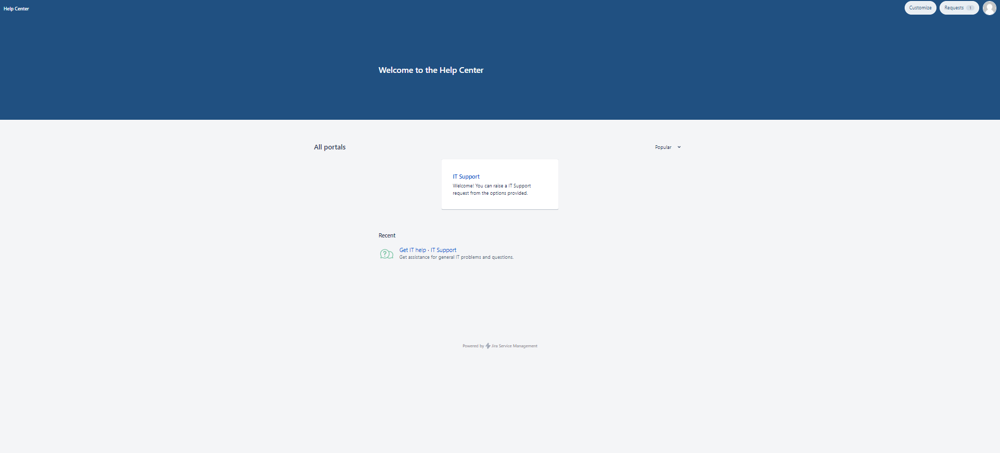

The HelpCenter Corrector plugin is designed to restrict access to a Jira Service Management (former Service Desk) HelpCenter.
The app is also compatible with RefinedTheme for Jira Service Desk.
There are three types of restrictions: for all users at once, per group, and for users without a group.
The plugin settings page can be found in the “Other” section of the “Manage apps" page.
After clicking the "Configure" button, we appear at the configuration page, where you can set up the plugin.
To restrict access to the HelpCenter for all users do the following:
To disable “All users” restriction press “Disable” button.
After that, all HelpCenter links in Service Desk will be hidden from any user. If the user tries to access HelpCenter using a direct link, he will be redirected to the URL that you have specified.
There is also an option to save the top-left corner Help Center link (see the screenshot) but replace its URL with the one that is configured. To do so please check the "Preserve Header Link" checkbox.
Help Center header link
Preserve Header Link
To set up group restriction do the following:
After these steps, all HelpCenter links in ServiceDesk will be hidden from any user that belongs to a group you have specified. If the user tries to access HelpCenter using a direct link, he will be redirected to the URL that you provided.
The steps for editing are the same as for adding - value will be updated.
Restrictions set up
To remove restrictions do the following:
Dropdown list with restricted groups
If you need to remove the search bar from the Service Desk portals overview screen (Help Center) or from the Customer Portal screen you can use the following options:
Search Bar options
Search Bar shown
Search Bar hidden